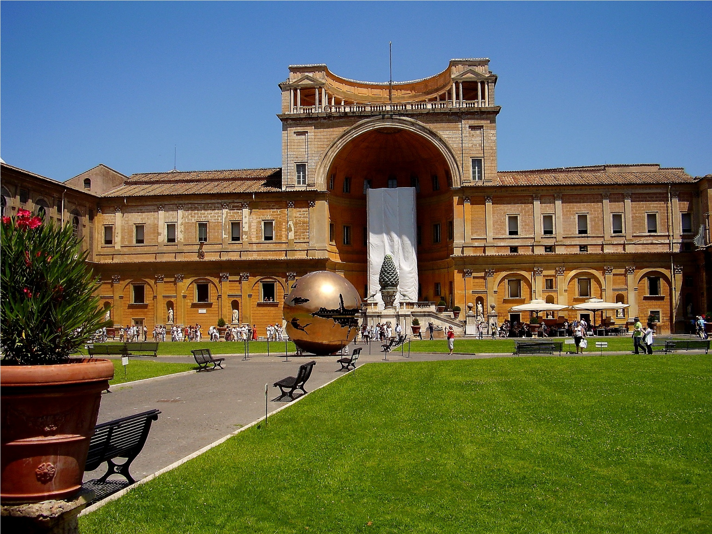
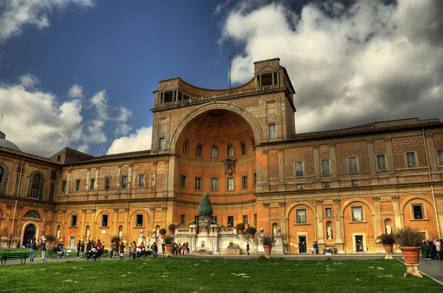
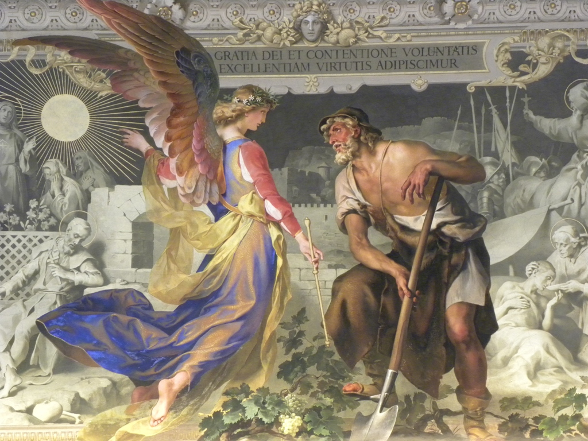
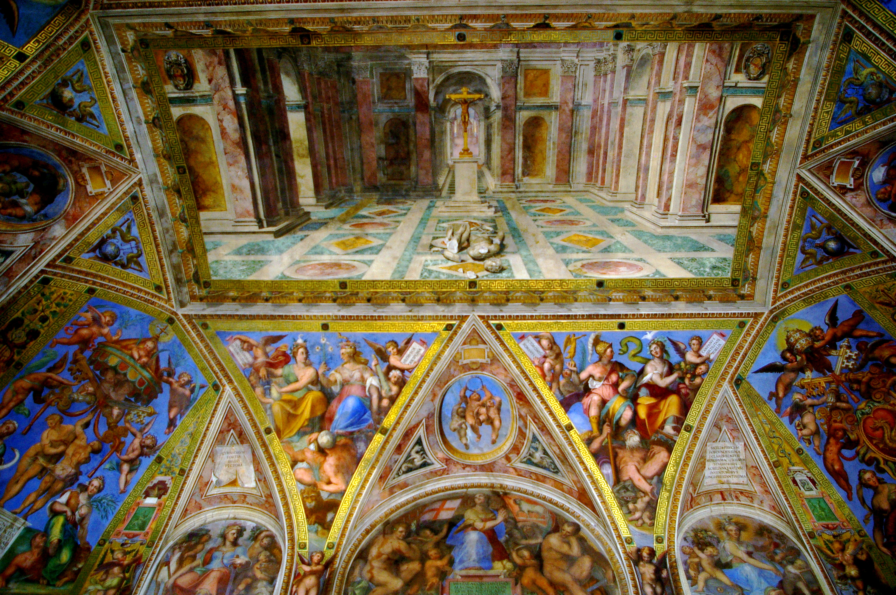

Oleh : Harum Saputri Zakia
NIM : 11210251000045

Museum Vatikan merupakan salah satu museum terbesar di Dunia. Museum ini memamerkan kumpulan beberapa seni dan patung publik di Kota Vatikan yang menampilkan karya-karya terbaik milik Gereja Katolik Roma. Para pengunjung kerap salah kaprah dan mengira museum ini adalah ruang kerja sekaligus kediaman Paus, pemimpin tertinggi Gereja Katolik dan penguasa Vatikan.
Asal mula Museum Vatikan diyakini berasal dari kisah patung marmer Laocoon yang ditemukan pada 14 Januari 1506 di sebuah kebun anggur dekat Basilika Santa Maria Maggiore di Roma. Paus kemudian membeli patung tersebut dari pemilik kebun anggur dan memperlihatkan Patung Laocoon dan putra-putranya dalam cengkeraman ular laut kepada publik di Vatikan tepat satu bulan sejak ditemukannya patung tersebut. Museum yang merupakan gabungan dari 22 museum kecil ini memiliki panjang keseluruhan yang mencapai 1,8 kilometer.
Sejarah Museum Vatican
   Museum Vatikan terletak di Kota Vatikan yang sejak tahun 1929 resmi menjadi negara berdaulat. Vatikan sendiri bisa disebut sebagai salah satu dari lima wilayah di Roma yang mampu menjaga warisan pusat peradaban tertua di dunia. Puncak dari Museum Vatikan adalah Kapel Sistina yang diresmikan pada tahun 1482. Kapel ini dibangun pada masa pemerintahan Paus Sixtus IV pada abad kelima belas, Baccio Pontelli. Konsepnya adalahkapel dari semua kapel. Memang dari segi arsitektur, ini adalah kapel terindah dengan langit-langit melengkung.
Akses Menuju Museum Vatican
Untuk mencapai lokasi ini, Anda bisa menggunakan tiga jenis moda transportasi yang tersedia di Vatikan. Yang pertama adalah jalur metro. Jika Anda ingin menggunakan kereta cepat ini, maka Anda dapat mencapainya dari stasiun Ottaviano Field dekat St. Peter's, selanjutnya Anda hanya perlu berjalan kaki menuju museum ini. Pilihan kedua adalah menggunakan bus untuk mencapai dari terminal bus Termini, namun Anda harus berjalan kaki cukup jauh untuk sampai ke Museum Vatikan. Pada malam hari saat jalur metro tidak beroperasi, pilihan terakhir adalah menggunakan taksi. Biaya yang akan Anda bayarkan jika menggunakan taksi dari Vatikan ke Terminal Bus Termini adalah sekitar 8 europe.
Untuk selengkapnya, klik disini!